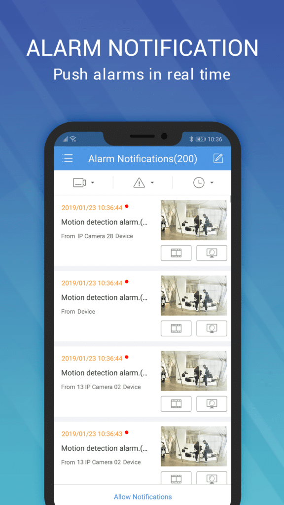

EZView的八年——从"手机看视频"到运维主力，再到UNV-Link时代的交接
我从EZView早期版本一路用到现在，看着它从一个简陋的视频预览器长成能扛10,000通道的运维主力，又在2024年突然被UNV-Link预告接班。这篇梳理它的迭代节奏、产品定位的几次转向，以及从版本进化里能读出的团队优先级。
现在打开EZView的官网，你看到的是一个能同时显示16路实况、双指捏合就能数字变焦、PTZ球机靠手势就能拉远拉近的客户端。它能扛的通道上限是10,000——这个数字放在八年前的移动端视频监控场景里，几乎是不可想象的。但更耐人寻味的不是它今天能做什么，而是它即将退场：2024年3月宇视公告，EZView和它背后的EZCloud云平台，将在2027年由UNV-Link（终端用户端）和UNV-Link Pro（工程商端）完全替代。
一个走到生命周期尾声的产品，反而适合回望。
来路：从"能看"到"能管"的三次转向
我没赶上EZView的第一个版本——样本文档里也没提它最早长什么样。但从产品线分工的痕迹里，大致能推断出它的起步逻辑：那时候宇视的IPC和NVR已经铺出去了，中心值班室有EZStation做上墙解码，但老板出差在外想看一眼门店的摄像头，总不能抱着工作站走。EZView最早的定位，大概率就是把EZStation的核心能力裁一裁，塞进手机里。
第一次明显转向，是它不再满足于"看实况"。样本文档里有个细节：EZView支持远程改检测区域、固件升级、诊断导出——这些是运维动作，不是查看动作。这个转变什么时候发生的？样本文档没给具体版本号，但有个佐证：同一条产品线里，ArchLive被单独拆出来做小型项目，最多6台NVR、界面简化——这说明EZView在某个版本之后，开始主动往"大、中型项目运维"的定位上靠，把轻量场景让给了ArchLive。那次拆分之后，EZView的通道上限一路拉到了10,000，PTZ手势、分段回放、告警推送这些功能也是在那一波里密集补上的——安装包直接从EZView下载拿就能体验到。
第二次转向，是告警体系的完整化。早期的监控App，告警就是推一条通知，点进去看一张快照，然后呢？EZView后来把告警做成了一套闭环：推送触发源细分到运动检测、人体检测、区域入侵、越界、设备离线，每条告警可以标记已确认、加备注、批量清理、自动删除——甚至备注内容同步到云端，换手机登录也能看到。这个细节很能说明问题：宇视的产品团队不是在做一个"远程查看器"，而是在做一个值班台的移动端延伸。值班员在中心值班室能做的告警处理，手机上也能做。
第三次转向，是取证能力的补强。数字变焦这件事特别有意思：光学变焦只有带PTZ的球机才有，但EZView让所有IPC都能用数字变焦放大看细节——哪怕是最便宜的720p枪机。截图又分1x/3x/5x三种模式，录屏没有硬时间限制，告警详情里自动带快照。这一套"取证三件套"的组合，明显不是为了"好看"设计的，而是为了有一天真的出事了，你能在手机上把证据取出来。

迭代里读出的团队优先级
从EZView文档能看到的功能清单，和那些一直没补上的功能，拼起来就是宇视产品团队的优先级画像。
他们一直在死磕的：通道规模和移动端完整度。 10,000通道这个数字不是摆设——NVR下挂IPC最多也就几十台，但一个大项目可能有几十台NVR、上千路通道。EZView扛住这个规模，意味着工程商的手机运维链路不用再拆分成多个App。PTZ手势、16路同显、分段回放，这些功能的共同点是：中心值班室能做的，手机上也要能做。他们不想让EZView变成一个"降级版"的EZStation。
他们一直没怎么管的：小众但低频的需求。 样本文档里明写了——EZView暂不支持批量导出告警历史。需要外部处理时，要么单条截图、要么设备端录像导出、要么登录EZCloud Web端。这不是做不到，而是优先级太低：绝大多数值班场景下，99%的告警不需要导出，手动清理或自动删除就够了。为那1%的场景花精力做批量导出，不如把通道上限再提一档。这个取舍很务实，也很典型。
还有一个微妙的信号：EZView的功能密度已经很高，但界面并没有变得混乱。样本文档里提到ArchLive"界面简化"，说明宇视是有意识地用产品线分层来管理复杂度，而不是把所有功能堆在同一个App里让用户自己藏。这比在一个App里做开关切换要聪明得多——用户拿到的就是他需要的，不会被10,000通道的功能压得手忙脚乱。

预判：UNV-Link接棒之后
2024年3月的那纸公告，给EZView的迭代画了一个终点。从现在到2027年，还有三年。
从迭代规律推的话，我猜测接下来这三年EZView的更新会以稳定性修复和迁移引导为主，不会再有大功能上线。通道上限不太可能再提，告警体系也不太可能加批量导出——那些东西是UNV-Link的事。宇视会把精力放在让EZView用户平滑过渡到UNV-Link上，比如设备注册码（P2P code）的保留、云账号的迁移路径确认，还有新项目直接引导用UNV-Link。
UNV-Link分了终端用户端和工程商端——这个命名本身就是一个信号：宇视想把C端和B端的体验彻底分开。之前EZView和ArchLive虽然分工明确，但还是同一个App Store入口。UNV-Link Pro只给工程商用，功能密度和EZView差不多，但用户不用被那些不属于自己的功能干扰。
至于谁会留在EZView不动？大概率是那些已经在建的老项目——设备不声明兼容UNV-Link的、不想改云账号绑定的、觉得现有EZView够用的。宇视给了三年缓冲期，就是在等这些存量项目自然更替。2027年之后EZCloud会不会真的停服？样本文档里用了"将由……替代"的措辞而不是"将于……停服"，但做产品的人都懂，被替代的云平台不会永久续命——只是给够了迁移时间而已。
回望这八年，EZView的进化史其实就是宇视对"移动端监控"这个场景的理解深化史：从"手机上能看"，到"手机上能管"，再到"手机上能取证"，每一步转向都踩在了真实的值班场景需求上。它被UNV-Link替代不是因为做得不好，而是因为产品线该升级了——一个跑了八年的主力客户端，功成身退，交接给下一代，这本身就是产品生命周期里最体面的结局。